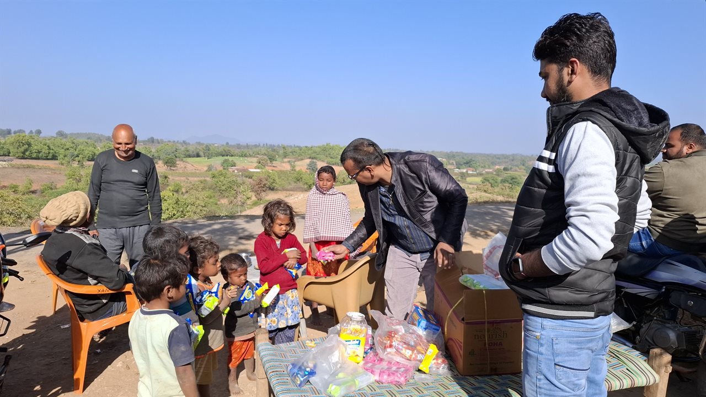
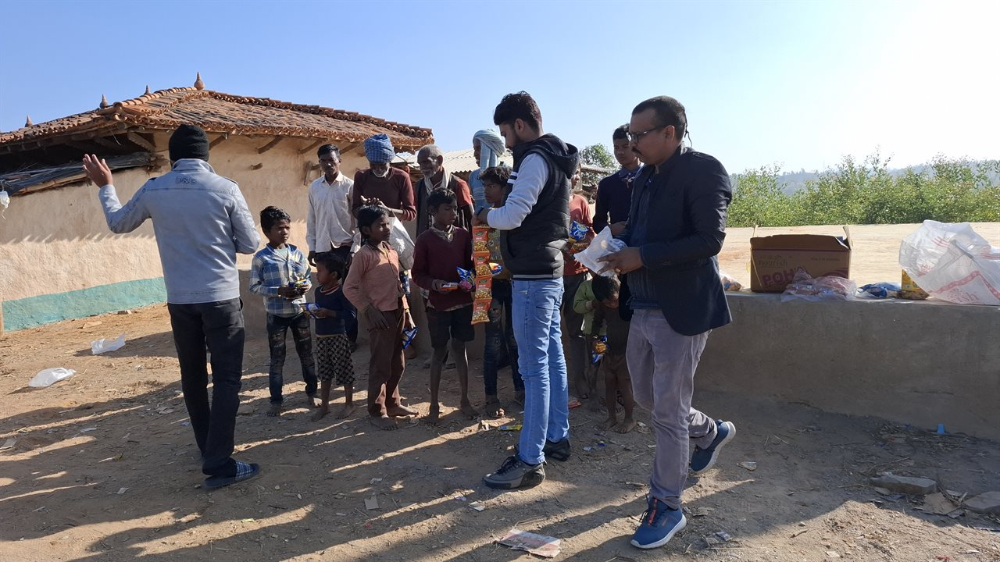
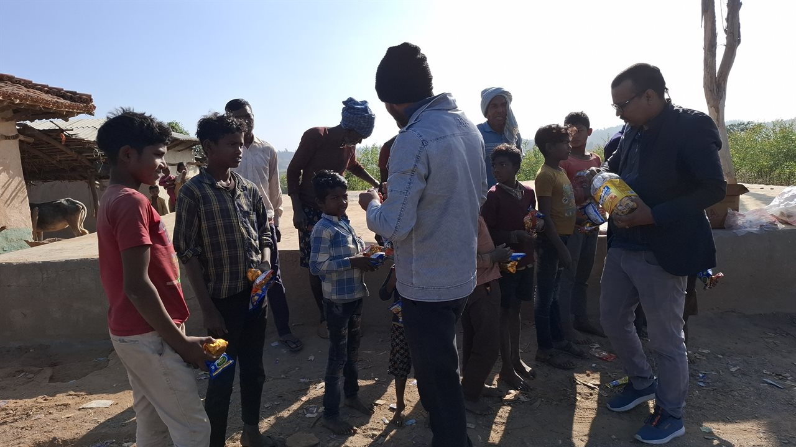

Govind Social Development Foundation (GSDF) is dedicated to elevating marginalized rural communities through quality education, rural healthcare, women empowerment, and sustainable community development.

A comprehensive holistic approach to eradicate poverty, illiteracy, and health inequality in rural India.
Free learning centres, school kit distribution, digital literacy, and evening tutoring for underprivileged children.
Learn More →Mobile medical camps, maternal health counseling, free medicines, and eye testing in remote rural pockets.
Learn More →Self-help groups (SHGs), vocational tailoring training, and micro-entrepreneurship for village women.
Learn More →Tree plantation drives, clean drinking water access, and eco-friendly village sanitation campaigns.
Learn More →Winter blanket drives for elderly & homeless, nutritional food kits for tribal children, and disaster response.
Learn More →Every rupee you donate is deployed straight to grassroots essentials: books, medicines, clean water, and warm blankets.
Support Today ❤︎Transparent, real-time photographic proof of our humanitarian initiatives across Deoghar, Madhupur, and Jharkhand.





Your generous contribution provides food, education, and healthcare directly to a vulnerable child or family.
Activity description and ground impact details.